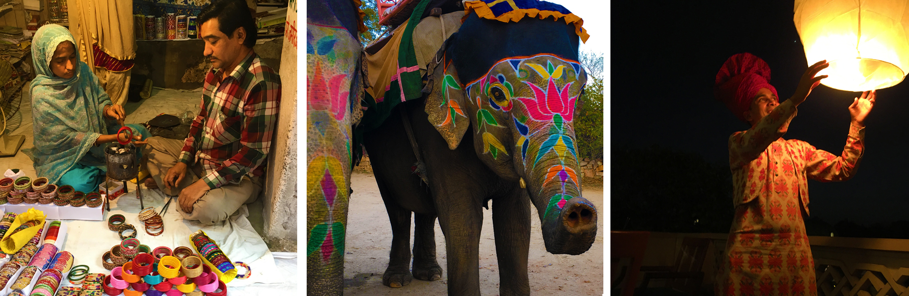

Retreats - North India 2018Journey through Rajasthan: 13 Days of Yoga, Historical Monuments and Cultural Immersion
23 March - 05 April 2018
Immerse yourself in the rich cultural and scenic experience of North India!
Discover India
This trip of a lifetime is set to be an amazing experience with a vast variety of activities that will immerse you in the culture of India. From visiting the Taj Mahal at sunrise, to a safari ride in the search for the Bengal Tiger, to participating in an ancient Hindu ritual, to a Boat Cruise on the picturesque Lake Piccola, to blissful yoga, this adventure will excite your senses, and delight your body, mind and soul.
Meet your Hosts
On your journey, you will have two guides who will share their knowledge and look after you: Claire Prest, India Expert and Tour Leader, and Katie Garnett, Yoga Teacher/Therapist. You will also be joined by local Indian guides in the different cities who will share in-depth knowledge of each location.
Claire Prest
Originally from Melbourne, Claire has made India her home for the last 18 years where she organises and manages tours. Claire has incredible knowledge of Indian history and culture, speaks fluent Hindi and is passionate about yoga. She is excited to unite her two passions, India and yoga, on this very special tour. Katie Garnett
Katie teaches alignment-focused yoga through which she interweaves yogic philosophy and teachings. Katie structures her classes around specific learning objectives to enhance her client’s experience, and deepen their yoga practice and knowledge. Katie discovered yoga in 1997, began teaching in 2011 and became a qualified therapist in 2015. She is skilled at adapting the class to suit all levels and abilities.
Approximate Schedule |
Delhi |
Fri, 23 Mar 2018 |
Arrive in India’s capital city. Meet your Tour Guide, Yoga Teacher and travel companions. |
Delhi |
Sat, 24 Mar 2018 |
Morning Yoga in the serene Lodi Gardens. Drive through the colonial Delhi with its administrative and parliamentary buildings, presidential palace and iconic India Gate. Visit Humayan’s Tomb, take a rickshaw ride in Old Delhi and dine in a restored Haveli. |
Agra |
Sun, 25 Mar 2018 |
Drive to Agra. Visit the impressive UNESCO Agra Fort. Built over 3 generations of Mughal Emperors, it is a superb synthesis of military fortifications and delicate interiors. Enjoy an evening Yoga session back at the Hotel on the lawn before diner. |
Ranthambore |
Mon, 26 Mar 2018 |
Visit the Taj Mahal at sunrise, return to your Hotel for breakfast. Drive to Ranthambore stopping at the deserted Mughal city of Fatehpur Sikri en route. Hauntingly beautiful, painstaking resored and now a UNESCO World Heritage Site. |
Ranthambore |
Tue, 27 Mar 2018 |
Early morning and late afternoon safaris in Ranthambore National Park. Originally the hunting ground of the Maharaja of Jaipur, now a wildlife safe haven and home to the elusive Royal Bengal Tiger. |
Jaipur |
Wed, 28 Mar 2018 |
Morning Yoga session before proceeding to the vibrant capital of Rajasthan, Jaipur, where you'll be staying on the quieter outskirts of the city. After lunch visit the ancient capital which begun in the 11th Century and expanded by succeeding dynasties and rulers. The Amber Fort is an impressive visual delight. |
Jaipur |
Thu, 29 Mar 2018 |
Explore the city by foot and auto rickshaw, revel in vibrant bazars dedicated to local artisans and get a feel for the famed Pink City. Visit UNESCO World Heritage Jantar Mantar, a remarkable astronomical observatory, before stopping for lunch. Afterwards drop into a renown Ayurveda Centre to learn about India’s ancient system of holistic health. You will have an option to indulge in a traditional ayurvedic massage. |
Pushkar |
Fri, 30 Mar 2018 |
Morning Yoga session before hitting the road to the holy town of Pushkar.
After an orientation of the town you are free to explore the shops, cafes and local life before regrouping as the sun sets to participate in an ancient Hindu ritual on the ghats of Pushkars sacred waters. |
Jodhpur |
Sat, 31 Mar 2018 |
Drive to Jodhpur on the edge of the Thar Desert.
Hike to Rock Garden. As the sun sets on the Blue City we roll out our mats for an evening yoga season. |
Jodhpur |
Sun, 01 Apr 2018 |
Morning Yoga session before a leisurely stroll through the old city taking in the ancient bazaar and street life. In the afternoon visit the impressive Mehrangarh Fort standing on a perpendicular cliff high above the skyline of Jodhpur. Wonderfully restored, the once private Palaces are now home to the Maharaja’s vast collection of howrahs, daggers, miniature paintings and even baby cradles! |
Narlai |
Mon, 02 Apr 2018 |
4X4 Jeep Safari through the countryside stopping at local Potter, Bishnoi and Weavers villages en route. Proceed to the small picturesque town of Narlai. Settle in and unwind poolside before an evening Yoga session. |
Udaipur |
Tue, 03 Apr 2018 |
Optional sunrise walk to Elephant Hill, the highest point atop massive granite boulders. Enjoy a leisurely stroll through the village meeting locals engaged in daily life before proceeding to Ranakpur. Visit the immaculate Jain Temples and continue driving over the Aravalli hills to Udaipur. Boat Cruise on the picturesque Lake Piccola and see why Udaipur is famed as the Venice of the East. |
Udaipur |
Wed, 04 Apr 2018 |
Orientation stroll into the city where you are free to enjoy last minute shopping! In the afternoon meet a Vedic Astrologer and learn how this ancient discipline has been guiding people for centuries. You have the option of a personal consultation. Enjoy your Farewell Diner overlooking the Lake. |
Depart |
Thu, 05 Apr 2018 |
Morning Yoga session before final packing. Today we fly to Delhi where your journey concludes. International flights home may be booked for late the same day evening. |
Inclusions:
- Accommodation for 13 nights
- All Meals and Mineral Water
- All Activities and Transfers mentioned in the program (excluding the optional extras, see below)
- All Monument Entry Fees
- Accompanying Tour Leader and Yoga Teacher
- Licensed English speaking private Local Guides
- All currently applicable taxes
Exclusions:
- Travel Insurance
- International airfare, other than mentioned above
- Indian Visa (see below)
- Tips to guides, drivers, porters, hotel staff or at restaurants
- Camera/video permits where required
- Personal expenses, including alcohol
- Early check-in or late check-out at hotels
Optional Extras (include an additional cost):
- Arrival Transfer from airport
- Ayurveda Treatment
- Vedic Astrology Consultation
Indian Visa:
You will be responsible for obtaining a valid visa for India. The Government of India now allows application for a simple tourist visa online (http://www.indianvisaonline.gov.in) without having to send in their passports. This electronic visa is valid for one stay of up to 30 days. Visas can also be obtained at a local embassy or consulate before arriving in India.

|